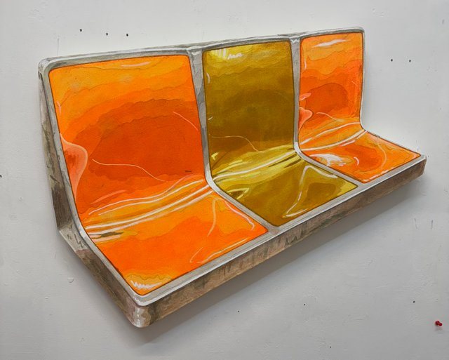

Akiva Listman and Sechor: Authorized Entry
VSG Contemporary is pleased to present Authorized Entry, a two-person exhibition featuring Akiva Listman and Sechor. The show brings together two distinct but complementary practices, exploring street culture and everyday urban objects in new ways, bending the rules of fine art while still feeling completely at home. Visitors will see familiar city details, such as subway seats, street signs, trains, graffiti tags, discarded coffee cups, lifted from daily commutes and given fresh attention.
Listman approaches the city through painting grounded in observation. He isolates everyday objects and removes them from their surroundings, letting them exist on their own terms. In Independence Ave, for example, he paints the iconic orange New York City subway seats in a way that feels instantly recognizable but newly strange. Working on shaped canvases, he breaks the rectangle, giving these objects a sense of floating in space. This exhibition was scheduled in early 2025, just before his breakout viral moments with Hi-Fructose, Juxtapoz, a Nike product release, and a public art project in Austria. His rollout of new paintings for this show has gained major traction online, with individual works like City Work reaching over three million views.
Sechor’s practice is rooted in graffiti culture. He began tagging at seven and continues to be active in freight graffiti today. Best known for his miniature graffiti freight trains, he has transformed this tradition into collectible works that capture the scale and energy of street writing in an intimate format. In Authorized Entry, his work expands into graphic design and sculpture — including pieces like Thermal, which transforms his tag into a three-dimensional sculpture, repeating the process with different materials. Over the past two years, VSG has shown more than a dozen of his trains… and found a collector for every one.
From a curatorial perspective, the gallery paired these artists for their shared interest in everyday urban objects, approached from opposite directions. Listman is a fine artist who looks to the street for inspiration. Sechor is a graffiti artist who brings fine art sensibility into the street. Different cities, different approaches — same impulse: noticing, reframing, and elevating the things we often pass by.
Opening Celebration: Saturday, February 14 from 1pm-5pm
Show Dates: February 14- March 21, 2026
Hours: Wednesday-Saturday from 12-5pm & by appointment